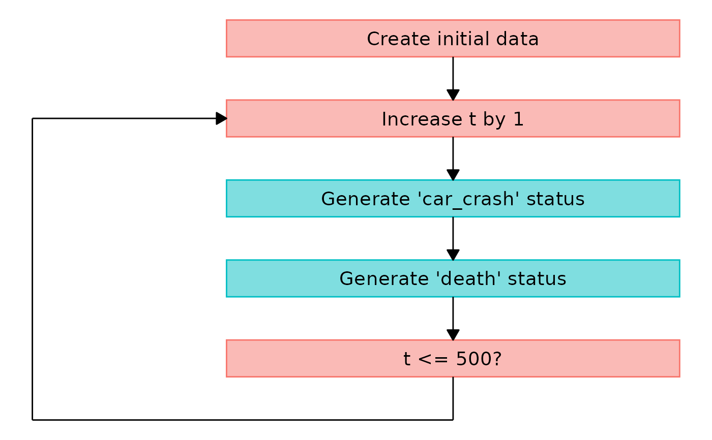

Plot a Flowchart for a Discrete-Time Simulation
plot.simDT.RdGiven a simDT object obtained with the sim_discrete_time function, plots a relatively simple flowchart of how the simulation was performed. Shows only some general information extracted from the dag.
Usage
# S3 method for class 'simDT'
plot(x, right_boxes=TRUE,
box_hdist=1, box_vdist=1,
box_l_width=0.35, box_l_height=0.23,
box_r_width=box_l_width,
box_r_height=box_l_height + 0.1,
box_alpha=0.5, box_linetype="solid",
box_linewidth=0.5, box_border_colors=NULL,
box_fill_colors=NULL, box_text_color="black",
box_text_alpha=1, box_text_angle=0,
box_text_family="sans", box_text_fontface="plain",
box_text_size=5, box_text_lineheight=1,
box_1_text_left="Create initial data",
box_1_text_right=NULL, box_2_text="Increase t by 1",
box_l_node_labels=NULL, box_r_node_labels=NULL,
box_last_text=paste0("t <= ", x$max_t, "?"),
arrow_line_type="solid", arrow_line_width=0.5,
arrow_line_color="black", arrow_line_alpha=1,
arrow_head_angle=30, arrow_head_size=0.3,
arrow_head_unit="cm", arrow_head_type="closed",
arrow_left_pad=0.3, hline_width=0.5,
hline_type="dashed", hline_color="black",
hline_alpha=1, ...)Arguments
- x
A
simDTobject created using thesim_discrete_timefunction.- right_boxes
Either
TRUE(default) orFALSE, specifying whether to add boxes on the right with some additional information about the nodes on the left.- box_hdist
A single positive number specifying the horizontal distance of the left and the right boxes.
- box_vdist
A single positive number specifying the vertical distance of the boxes.
- box_l_width
A single positive number specifying the width of the boxes on the left side.
- box_l_height
A single positive number specifying the height of the boxes on the left side.
- box_r_width
A single positive number specifying the width of the boxes on the right side. Ignored if
right_boxes=FALSE.- box_r_height
A single positive number specifying the height of the boxes on the right side. Ignored if
right_boxes=FALSE.- box_alpha
A single number between 0 and 1 specifying the transparency level of the boxes.
- box_linetype
A single positive number specifying the linetype of the box outlines.
- box_linewidth
A single positive number specifying the width of the box outlines.
- box_border_colors
A character vector of length two specifying the colors of the box outlines. Set to
NULL(default) to useggplot2default colors.- box_fill_colors
A character vector of length two specifying the colors of the inside of the boxes. Set to
NULL(default) to useggplot2default colors.- box_text_color
A single character string specifying the color of the text inside the boxes.
- box_text_alpha
A single number between 0 and 1 specifying the transparency level of the text inside the boxes.
- box_text_angle
A single positive number specifying the angle of the text inside the boxes.
- box_text_family
A single character string specifying the family of the text inside the boxes. May be one of
"sans", "serif", "mono".- box_text_fontface
A single character string specifying the fontface of the text inside the boxes. May be one of
"plain", "bold", "italic", "bold.italic".- box_text_size
A single number specifying the size of the text inside the boxes.
- box_text_lineheight
A single number specifying the lineheight of the text inside the boxes.
- box_1_text_left
A single character string specifying the text inside the first box from the top on the left side.
- box_1_text_right
A single character string specifying the text inside the first box from the top on the right side or
NULL. IfNULL(default) it will simply state which variables were generated at t = 0.- box_2_text
A single character string specifying the text inside the second box from the top.
- box_l_node_labels
A character vector with one entry for each time-varying node used in the simulation. These will be used to fill the boxes on the left side of the plot. Set to
NULLto use default values.- box_r_node_labels
A character vector with one entry for each time-varying node used in the simulation. These will be used to fill the boxes on the right side of the plot. Set to
NULLto use default values. Ignored ifright_boxes=FALSE.- box_last_text
A single character string specifying the text inside the last box on the left side. By default it uses the
max_targument from the initial function call to construct a fitting text.- arrow_line_type
A single character string specifying the linetype of the arrows.
- arrow_line_width
A single positive number specifying the line width of the arrows.
- arrow_line_color
A single character string specifying the color of the arrows.
- arrow_line_alpha
A single number between 0 and 1 specifying the transparency level of the arrows.
- arrow_head_angle
A single number specifying the angle of the arrow heads.
- arrow_head_size
A single number specifying the size of the arrow heads. The unit is defined by the
arrow_head_sizeargument.- arrow_head_unit
A single character string specifying which unit to use when specifying the
arrow_head_sizeargument. Defaults to"cm".- arrow_head_type
A single character string specifying which type of arrow head to use. See
?arrowfor more details.- arrow_left_pad
A single positive number specifying the distance between the left boxes and the arrow line to the left of it.
- hline_width
A single number specifying the width of the horizontal lines between the left and right boxes.
- hline_type
A single character string specifying the linetype of the horizontal lines between the left and right boxes.
- hline_color
A single character string specifying the color of the horizontal lines between the left and right boxes.
- hline_alpha
A single number between 0 and 1 specifying the transparency level of the horizontal lines between the left and right boxes.
- ...
Currently not used.
Details
The resulting flowchart includes two columns of boxes next to each other. On the left side it always starts with the same two boxes: a box about the creation of the initial data and a box about increasing the simulation time by 1. Next, there will be a box for each time-varying variable in the simDT object. Afterwards there is another box which asks if the maximum simulation time was reached. An arrow to the left that points back to the second box from the top indicates the iterative nature of the simulation process. The right column of boxes includes additional information about the boxes on the left.
The text in all boxes may be changed to custom text by using the box_1_text_left, box_1_text_right, box_2_text, box_l_node_labels, box_r_node_labels and box_last_text arguments. It is also possible to completely remove the left line of boxes and to change various sizes and appearances. Although these are quite some options, it is still a rather fixed function in nature. One cannot add further boxes or arrows in a simple way. The general structure may also not be changed. It may be useful to visualize a general idea of the simulation flow, but it may be too limited for usage in scientific publications if the simulation is more complex.
The graphic is created using the ggplot2 package and the output is a standard ggplot object. This means that the user can change the result using standard ggplot syntax (adding more stuff, changing geoms, ...).
Examples
library(simDAG)
set.seed(435345)
## exemplary car crash simulation, where the probability for
## a car crash is dependent on the sex, and the probability of death is
## highly increased for 3 days after a car crash happened
prob_car_crash <- function(data) {
ifelse(data$sex==1, 0.001, 0.01)
}
prob_death <- function(data) {
ifelse(data$car_crash_event, 0.1, 0.0001)
}
dag <- empty_dag() +
node("sex", type="rbernoulli", p=0.5) +
node_td("car_crash", type="time_to_event", prob_fun=prob_car_crash,
parents="sex") +
node_td("death", type="time_to_event", prob_fun=prob_death,
parents="car_crash_event")
# generate some data
sim <- sim_discrete_time(dag, n_sim=20, max_t=500, save_states="last")
if (requireNamespace("ggplot2")) {
# default plot
plot(sim)
# removing boxes on the right
plot(sim, right_boxes=FALSE)
}
